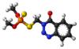

azinphos-methyl

Definition: Azinphos-methyl (Guthion) (also spelled azinophos-methyl) is a broad spectrum organophosphate insecticide manufactured by Bayer CropScience, Gowan Co., and Makhteshim Agan. Like other pesticides in this class, it owes its insecticidal properties (and human toxicity) to the fact that it is an acetylcholinesterase inhibitor (the same mechanism is responsible for the toxic effects of the V-series nerve agent chemical weapons). It is classified as an extremely hazardous substance in the United States as defined in Section 302 of the U.S. Emergency Planning and Community Right-to-Know Act (42 U.S.C. 11002), and is subject to strict reporting requirements by facilities which produce, store, or use it in significant quantities.
Source: Wikipedia
Wikipedia Page
Wikidata Page